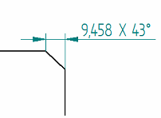
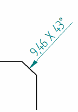
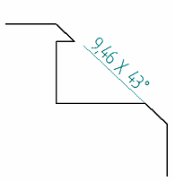

Chamfer Dimension command bar
Sets options for chamfer dimensions. Some options are available only when you have selected an element first.
- Format group options
-
- Dimension Style Mapping
-
Specifies that the setting on the Dimension Style tab of the Options dialog box determines the dimension style. When you set this option, Dimension Style is unavailable.
- Dimension Style
-
Lists and applies the available dimension styles. This control is unavailable when Dimension Style Mapping is enabled.
- Text Scale
-
Applies a scale value to the current text height. The default value is 1.0.
 /
/ Driving/Driven Dimension
Driving/Driven Dimension-
Changes the state of the selected dimension between driving (lock icon) and driven (unlocked icon).
-
When you set a dimension to driving, its value controls the size, orientation, or location of connected sketch elements. Its dimension value is prevented from being changed when a connected face is moved or sized.
-
When you set a dimension to driven, its value is controlled by the element it refers to, or by a formula or variable you define. When a dimension is driven, and faces connected to the dimensioned edge are modified, the dimension value is allowed to change.
If you want to set this option before you place a dimension, you must first select the Maintain Relationships command.
-
- Round-Off
-
Sets the round-off for the value. This option is sensitive to the unit setting (decimal or fractional) and contains values as appropriate for the unit. This option is also sensitive to the dimension being placed and contains values as appropriate for the dimension.
 Advanced Round-off
Advanced Round-off-
Displays the Round-off dialog box for you to specify all round-off options in one location.
- Properties group options
-
Orientation
Sets the display of the chamfer dimension. You can choose from the following Orientation options:
Along Axis

Callout Perpendicular

Callout Parallel

- Tolerance group options
-
- Dimension Type
-
Specifies the dimension type. You can choose from the following dimension types.
Nominal

Tolerance (unit)
Enter a numeric tolerance value in specified units.
Example:-
You can type 1/8, and it converts to .125.
-
You can enter values in degrees-minutes-seconds.
Note:-
You can type the tolerance values in the upper and lower boxes, and use the + and - buttons to specify that the values are positive or negative.

-
You can specify Tolerance (unit) layout and justification on the Units tab and the Secondary Units tab in the Dimension Properties dialog box.
Tolerance (alpha)
Enter an alphanumeric string.

Class
 Note:
Note:You can type the tolerance values in the Upper Tolerance and Lower Tolerance boxes.
Limit
 Note:
Note:You can type the tolerance values in the upper and lower boxes, and use the + and - buttons to specify that the values are positive or negative.
Basic

Reference

Blank

-
- Inspection
-
Adds an inspection bubble around the dimension text.

- Prefix

-
Opens the Dimension Prefix dialog box for specifying prefix, suffix, superfix, and subfix information.
- Enable Prefix

-
When set, applies the dimension text specified in the Dimension Prefix dialog box to the next dimension you place.
You can use this option to turn the dimension text on and off without having to open the Dimension Prefix dialog box.
- Upper Tolerance
-
Sets the primary upper tolerance value. This option is available for tolerance, class, and limit dimension types.
- Lower Tolerance
-
Sets the primary lower tolerance value. This option is available for tolerance, class, and limit dimension types.
- Upper Tolerance Sign (+)/Lower Tolerance Sign (-)
-
By default, the Upper Tolerance box displays the positive upper tolerance value, and the Lower Tolerance box displays the negative lower tolerance value.
-
You can use the Upper Tolerance Sign (+) button and the Lower Tolerance Sign (-) button to specify whether the value in the box is a positive value or a negative value. Selecting either button changes it from + to -, and from - to +.
-
Another way to change the values from positive to negative is to type a - or + in the box and then use the Tab or Enter key to update the dimension. This does not change the state of the button on the command bar.
-
You can format the unit tolerance values using the options on the Units tab and the Secondary Units tab in the Dimension Properties dialog box.
-
- Type
-
Specifies the class type when the Class dimension type is selected. You can choose from the following options.
Fit

Fit, tolerance only

Fit with tolerance

Fit with limits

Fit Hole/Shaft only

Fit Hole/Shaft, tolerance only

Fit Hole/Shaft with tolerance

User-defined
(Any user-defined text is valid)

For more information, see Fit dimensions.
- Class (Fit)
-
Sets the tolerance class for user-defined, class fit dimensions. You can type any text in the box.
This option is available only when the Dimension Type is set to Class, and the Class Type is set to User-defined.
- Hole
-
Sets the tolerance class for a hole. This option is not available for the Class Type: User-defined.
- Shaft
-
Sets the tolerance class for a shaft. This option is not available for the Class Type: User-defined.
Note:You can change the formatting of class fit type dimensions and tolerance type dimensions using the options in the Tolerance Text section of the Text tab (Dimension Style and Dimension Properties) dialog box. For example, you can specify a slash or a horizontal separator; how to align the numbers (to the + or - sign or the decimal point); and whether to use a degree symbol.